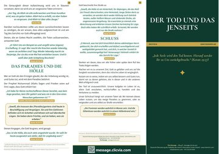

Wissenschaftliche Wunder im Koran
Deutsche Übersetzung des 6-seitigen Faltblatts des Islamic Information Center (Dubai); Koranverse in der offiziellen Übersetzung von Bubenheim und Elyas, Hadithe in inoffizieller Übersetzung.
„Wir werden ihnen Unsere Zeichen am Gesichtskreis und in ihnen selbst zeigen, bis es ihnen klar wird, daß es die Wahrheit ist. Genügt es denn nicht, daß dein Herr über alles Zeuge ist?“ (Koran 41:53)
Der Koran, das Buch des Islam, ist das letzte von Gott an die Menschheit offenbarte Buch und das letzte in der Reihe der Offenbarungen, die den Propheten zuteilwurden.
Obwohl der Koran (vor mehr als 1400 Jahren offenbart) nicht in erster Linie ein Wissenschaftsbuch ist, enthält er Hinweise auf wissenschaftliche Tatsachen, die erst in jüngster Zeit dank des Fortschritts von Technik und wissenschaftlicher Erkenntnis entdeckt wurden. Der Islam ermutigt zum Nachdenken und zur wissenschaftlichen Forschung, denn wer die Natur der Schöpfung versteht, kann seinen Schöpfer und die Größe Seiner Macht und Weisheit besser würdigen.
Der Koran wurde in einer Zeit offenbart, in der die Wissenschaft primitiv war; es gab keine Teleskope, keine Mikroskope und nichts, was mit der heutigen Technik vergleichbar wäre. Die Menschen glaubten, die Sonne kreise um die Erde und der Himmel werde von Säulen an den Ecken einer flachen Erde getragen. In diesem Umfeld wurde der Koran offenbart, mit klaren Hinweisen auf viele wissenschaftliche Tatsachen zu Themen von der Astronomie bis zur Biologie, Geologie und Zoologie.
Zu den vielen wissenschaftlichen Wahrheiten, die sich im Koran finden, gehören:
1. Der Ursprung des Lebens
Das Wasser wird als Ursprung allen Lebens genannt. Alle Lebewesen bestehen aus Zellen, und heute wissen wir, dass Zellen hauptsächlich aus Wasser bestehen. Das wurde erst nach der Erfindung des Mikroskops entdeckt. In den Wüsten Arabiens wäre es undenkbar gewesen, dass jemand hätte erraten können, dass alles Leben auf der Erde aus dem Wasser stammt.
„Sehen denn diejenigen, die ungläubig sind, nicht, daß die Himmel und die Erde eine zusammenhängende Masse waren? Da haben Wir sie getrennt und aus dem Wasser alles Lebendige gemacht. Wollen sie denn nicht glauben?“
Koran 21:30
2. Die Entwicklung des menschlichen Embryos
Gott spricht über die Stadien der Embryonalentwicklung des Menschen:
„Wir schufen den Menschen ja aus einem Auszug aus Lehm. Hierauf machten Wir ihn zu einem Samentropfen in einem festen Aufenthaltsort. Hierauf schufen Wir den Samentropfen zu einem Anhängsel, dann schufen Wir das Anhängsel zu einem kleinen Klumpen, dann schufen Wir den kleinen Klumpen zu Knochen, dann bekleideten Wir die Knochen mit Fleisch. Hierauf ließen Wir ihn als eine weitere Schöpfung entstehen. Segensreich ist Allah, der beste Schöpfer.“
Koran 23:12-14
Das arabische Wort „Alaqah“ hat drei Bedeutungen: ein Blutegel, etwas Aufgehängtes und ein Blutklumpen. „Mudghah“ bedeutet eine gekaute Masse. Fachleute der Embryologie haben festgestellt, dass diese Begriffe die Entstehung des Embryos genau beschreiben und mit unserem heutigen wissenschaftlichen Verständnis des Entwicklungsprozesses übereinstimmen.
Bis zum 20. Jahrhundert wusste man sehr wenig über die Einteilung und die Entwicklungsstadien menschlicher Embryonen. Das zeigt, dass die Beschreibungen des Korans nicht auf dem wissenschaftlichen Wissen des 7. Jahrhunderts beruhen können.
3. Die Ausdehnung des Universums
In einer Zeit, in der die Astronomie noch primitiv war, wurde der folgende Vers des Korans offenbart:
„Und den Himmel haben Wir mit Kraft aufgebaut, und Wir weiten (ihn) wahrlich (noch) aus.“
Koran 51:47
Eine der Bedeutungen dieses Verses ist, dass Gott das Universum (die Himmel) ausdehnt. Andere mögliche Bedeutungen sind, dass Gott das Universum erhält und Macht über es hat – was ebenfalls zutrifft.
Die Tatsache, dass sich das Universum ausdehnt (das heißt, dass sich die Himmelskörper voneinander entfernen), wurde im letzten Jahrhundert entdeckt. Der Physiker Stephen Hawking schrieb in seinem Buch „Eine kurze Geschichte der Zeit“:
„Die Entdeckung, dass sich das Universum ausdehnt, war eine der großen geistigen Revolutionen des 20. Jahrhunderts.“
Der Koran deutet auf die Ausdehnung des Universums hin, lange vor der Erfindung des Teleskops.
4. Das vom Himmel herabgesandte Eisen
Eisen ist kein natürliches Element der Erde, denn es gelangte aus dem Weltall auf unseren Planeten. Wissenschaftler haben entdeckt, dass die Erde vor Milliarden von Jahren von Meteoriten getroffen wurde, die Eisen aus fernen, explodierten Sternen mit sich trugen.
Gott verwendet den Ausdruck „Wir sandten herab“. Das ist sehr bedeutsam, denn eine starke wissenschaftliche Meinung vertritt, dass das Eisen durch Meteoriten auf die Erde gelangte. Diese Tatsache konnte der primitiven Wissenschaft des 7. Jahrhunderts nicht bekannt sein.
Gott sagt im Koran: „Wir haben ja Unsere Gesandten mit den klaren Beweisen gesandt und mit ihnen die Schrift und die Waage herabgesandt, damit die Menschen für die Gerechtigkeit eintreten. Und Wir haben das Eisen herabgsandt. In ihm ist starke Gewalt und Nutzen für die Menschen -, damit Allah kennt, wer Ihm und Seinen Gesandten im Verborgenen hilft. Gewiß, Allah ist Stark und Allmächtig.“
Koran 57:25
5. Der Schutz durch den Himmel
Der Himmel spielt eine entscheidende Rolle beim Schutz der Erde und ihrer Bewohner vor den tödlichen Strahlen der Sonne sowie vor der extremen Kälte des Weltalls.
Gott fordert uns im folgenden Vers auf, über den Himmel nachzudenken:
„Und Wir haben den Himmel zu einem wohlbehüteten Dach gemacht. Dennoch wenden sie sich von seinen Zeichen ab.“
Koran 21:32
Der Koran nennt die schützende Aufgabe des Himmels als ein Zeichen der Macht Gottes. Diese schützenden Eigenschaften wurden durch die wissenschaftliche Forschung des 20. Jahrhunderts entdeckt.
6. Die Berge
Gott lenkt unsere Aufmerksamkeit auf eine wichtige Eigenschaft der Berge:
„Haben Wir nicht die Erde zu einer Lagerstatt gemacht und die Berge zu Pfählen?“
Koran 78:6-7
Der Koran beschreibt die tiefen Wurzeln der Berge genau, indem er das Wort „Pflöcke“ verwendet. So ragt zum Beispiel der Mount Everest etwa 9 Kilometer über die Erdoberfläche, während seine Wurzel mehr als 125 Kilometer in die Tiefe reicht.
Dass Berge tiefe, pflockartige Wurzeln haben, war bis zur Entwicklung der Theorie der Plattentektonik Anfang des 20. Jahrhunderts unbekannt. Gott sagt im Koran auch: „Und Er hat auf der Erde festgegründete Berge gesetzt, daß sie nicht mit euch wanke, und Flüsse und Wege (geschaffen) - auf daß ihr rechtgeleitet werden möget“ (Koran 16:15) Dieses Phänomen begann man erst in jüngster Zeit wissenschaftlich zu verstehen.
7. Die Umlaufbahn der Sonne
Im Jahr 1512 stellte der Astronom Nikolaus Kopernikus seine Theorie auf, nach der die Sonne unbeweglich im Mittelpunkt des Sonnensystems steht und die Planeten um sie kreisen. Diese Auffassung hielt sich unter den Astronomen bis ins 20. Jahrhundert. Heute weiß man mit Sicherheit, dass die Sonne nicht stillsteht, sondern sich auf einer Umlaufbahn um das Zentrum unserer Galaxie, der Milchstraße, bewegt.
Der Koran erwähnt:
„Und Er ist es, Der die Nacht und den Tag, die Sonne und den Mond erschaffen hat; alles läuft in einer (jeweils eigenen) Umlaufbahn.“
Koran 21:33
8. Die inneren Wellen des Ozeans
Früher glaubte man, Wellen gebe es nur an der Meeresoberfläche. Ozeanografen haben jedoch entdeckt, dass es innere Wellen gibt, die unter der Oberfläche entstehen, für das menschliche Auge unsichtbar und nur mit Spezialgeräten nachweisbar.
Der Koran sagt:
„Oder (sie sind) wie Finsternisse in einem abgrundtiefen Meer, das von Wogen überdeckt ist, über denen (nochmals) Wogen sind, über denen (wiederum) Wolken sind: Finsternisse, eine über der anderen. Wenn er seine Hand ausstreckt, kann er sie kaum sehen. Und wem Allah kein Licht schafft, für den gibt es kein Licht.“
Koran 24:40
Diese Beschreibung ist erstaunlich, denn vor 1400 Jahren gab es kein Gerät, das diese inneren Wellen in den Tiefen des Ozeans hätte erfassen können.
9. Das Gehirn und die Lüge
Zur Zeit des Propheten Muhammad (Friede sei mit ihm) lebte ein grausamer und unterdrückerischer Stammesführer. Gott offenbarte einen Vers, um ihn zu warnen:
„Keineswegs! Wenn er nicht aufhört, werden Wir ihn ganz gewiß an der Stirnlocke packen und ziehen, einer Stirnlocke, einer lügnerischen, einer verfehlt handelnden.“
Koran 96:15-16
Gott nennt nicht den Mann einen Lügner, sondern bezeichnet seine Stirn (den vorderen Teil des Gehirns) als lügnerisch und sündig. Zahlreiche moderne Studien haben entdeckt, dass der Stirnlappen des Gehirns sowohl für das Lügen als auch für willkürliche Bewegungen und damit für die Sünde verantwortlich ist. Diese Funktionen wurden mithilfe medizinischer Bildgebungsgeräte entdeckt, die im 20. Jahrhundert entwickelt wurden.
10. Die zwei Meere, die sich nicht vermischen
Über die Meere sagt unser Schöpfer:
„Er hat den beiden Meeren freien Lauf gelassen; sie treffen aufeinander, zwischen ihnen ist (aber) ein trennendes Hindernis, (das)s sie (ihre Grenzen) nicht überschreiten.“
Koran 55:19-20
Eine physikalische Kraft, die Oberflächenspannung genannt wird, verhindert, dass sich die Wasser benachbarter Meere wegen ihrer unterschiedlichen Dichte vermischen. Es ist, als gäbe es eine dünne Wand, die sie trennt. Dieses Phänomen haben Meeresforscher erst vor Kurzem entdeckt.
Könnte Muhammad den Koran geschrieben haben?
Der Prophet Muhammad (Friede sei mit ihm) war in der Geschichte dafür bekannt, dass er weder lesen noch schreiben konnte; er hatte in keinem Fachgebiet eine Ausbildung erhalten, die die wissenschaftliche Genauigkeit des Korans erklären könnte.
Manche behaupten, er habe seine Lehren von gebildeten oder weisen Menschen seiner Zeit übernommen. Wäre das so gewesen, würde der Koran jedoch auch die verbreiteten wissenschaftlichen Irrtümer jener Zeit enthalten. Wir stellen aber fest, dass der Koran völlig frei von Fehlern ist, seien sie wissenschaftlicher oder anderer Art.
Andere meinen, der Koran sei im Laufe der Zeit verändert worden, je nachdem, welche neuen wissenschaftlichen Tatsachen entdeckt wurden. Das ist jedoch unmöglich, denn es ist historisch belegt, dass der Koran in seiner arabischen Originalsprache bewahrt wurde – was an sich schon ein großes Wunder ist.
Nur Zufall?
Auch wenn sich dieses Faltblatt auf die wissenschaftlichen Wunder konzentriert, enthält der Koran noch andere Arten belegter Wunder: historische, prophetische, sprachliche und literarische, dazu seine starke geistige Wirkung auf die Menschen.
All diese Wunder können nicht das Ergebnis des Zufalls sein; sie sind klare Beweise dafür, dass der Koran von Gott stammt, dem Schöpfer aller Gesetze der Wissenschaft.
„Wir werden ihnen Unsere Zeichen am Gesichtskreis und in ihnen selbst zeigen, bis es ihnen klar wird, daß es die Wahrheit ist. Genügt es denn nicht, daß dein Herr über alles Zeuge ist?“
Koran 41:53
Er ist derselbe Gott, der alle Propheten mit einer einzigen Botschaft gesandt hat: Gott allein anzubeten und den Lehren Seiner Gesandten zu folgen.
Der Koran ist ein Buch der Rechtleitung, das zeigt, dass Gott den Menschen nicht erschaffen hat, damit er ohne Sinn lebt, sondern damit er ein hohes Ziel erreicht: Gottes Vollkommenheit, Seine Größe und Seine Einzigkeit anzuerkennen und Ihm zu gehorchen.
Jeder Mensch ist aufgerufen, seinen Verstand und seine Vernunft zu gebrauchen, um über die Zeichen Gottes nachzudenken – und der Koran ist das wichtigste von allen.
Lies ihn und entdecke seine Schönheit und seine Wahrheit, damit du Erfolg erlangst.
Koranverse: offizielle Übersetzung von Frank Bubenheim und Dr. Nadeem Elyas (quranenc.com).
* Inoffizielle Übersetzung, für dieses Faltblatt angefertigt (Aussprüche des Propheten und frei zitierte Stellen). Offizielle Hadith-Übersetzungen: hadeethenc.com
Deutsche Übersetzung des Faltblatts des Islamic Information Center (Dubai) · www.islamicic.com


Flyer zum Ausdrucken
 Einführung in den Islam: eine praktische und ausgewogene Lebensweise
Einführung in den Islam: eine praktische und ausgewogene LebensweiseDeutsch
 Der Prophet Muhammad: diesen Mann solltest du kennen!
Der Prophet Muhammad: diesen Mann solltest du kennen!Deutsch
 Jesus: ein Prophet Gottes
Jesus: ein Prophet GottesDeutsch
 Das Gottesverständnis im Islam
Das Gottesverständnis im IslamDeutsch
 Der Koran: die letzte Offenbarung an die Menschheit
Der Koran: die letzte Offenbarung an die MenschheitDeutsch
 Was ist der Sinn des Lebens?
Was ist der Sinn des Lebens?Deutsch
 Missverständnisse über den Islam
Missverständnisse über den IslamDeutsch
 Die Rechte der Frau im Islam
Die Rechte der Frau im IslamDeutsch

Der Tod und das JenseitsDeutsch